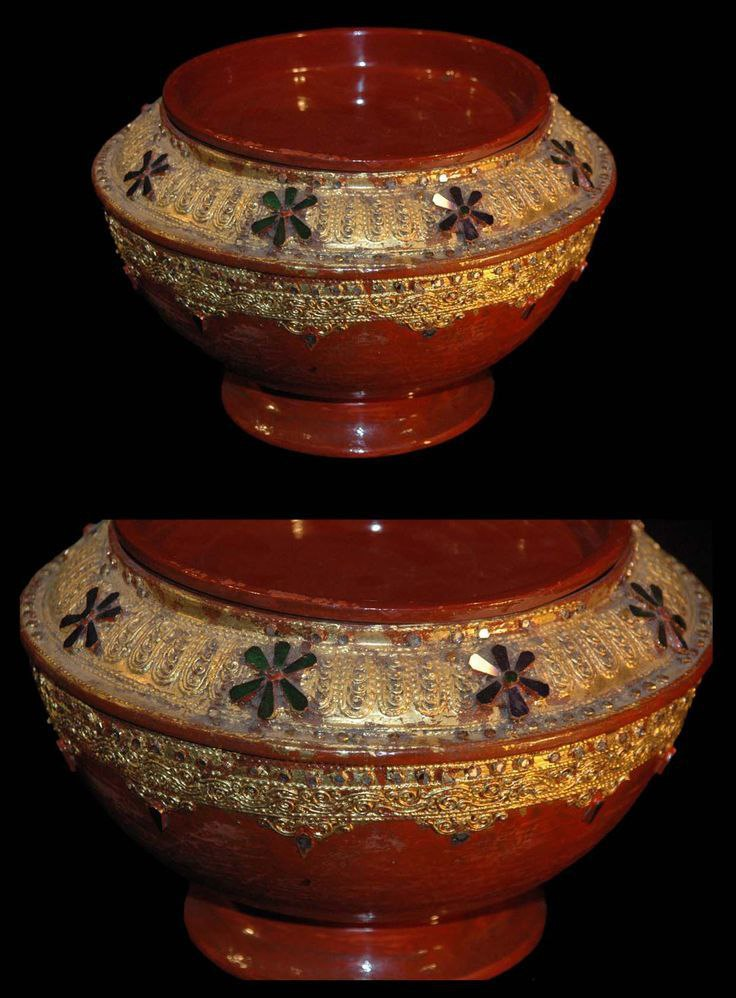
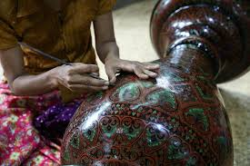
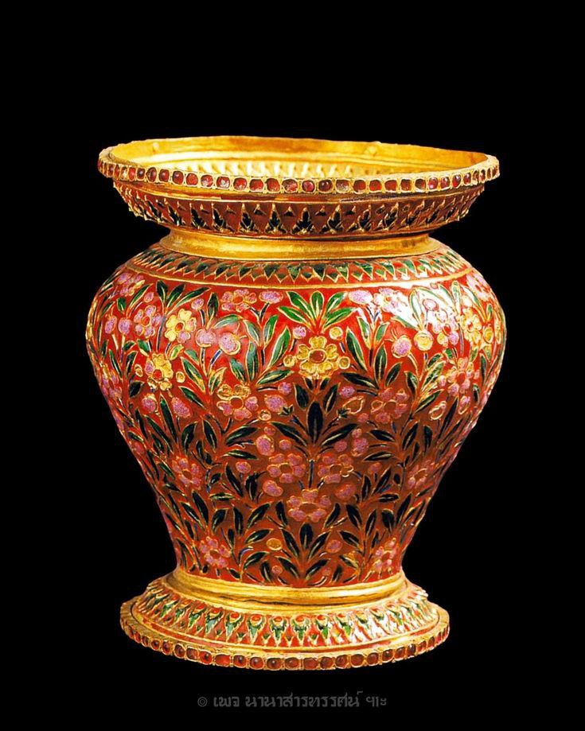
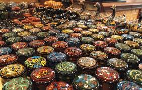

Gem-studded Lacquerware is the ultimate expression of luxury in Myanmar’s traditional arts. It is an evolution of the glass mosaic technique, where instead of glass, authentic precious and semi-precious stones are used. Historically, these masterpieces were crafted exclusively for royalty and high-ranking nobility, often used in royal regalia, ceremonial boxes, and as offerings in the most sacred temples.

The foundation is usually a high-grade wooden or thick lacquer base. Like the Relief Molded style, intricate patterns are first built up using Thayo (lacquer paste) to create "beds" or "sockets" for the gemstones.
Authentic Myanmar gems such as rubies, sapphires, jade, and pearls, along with semi-precious stones like quartz and garnet, are selected. Each stone is meticulously hand-set into the wet lacquer paste. For royal pieces, the "Navaratna" (nine gems) are often used to symbolize power and protection.
Once the stones are securely set, the surrounding patterns and the entire surface are gilded with 24-karat gold leaf (*Shwe-si*). The contrast between the sparkling colorful gems and the deep golden background creates a breathtaking aesthetic.
The stones are carefully cleaned and polished to remove any stray lacquer or gold leaf, ensuring each gem shines with its natural brilliance.

These items are more than just lacquerware; they are considered family heirlooms and spiritual artifacts. Common items include Kun-it (betel nut boxes), ceremonial bowls, and Buddha shrines. They represent the peak of Myanmar’s craftsmanship, blending mineral wealth with artistic soul.

Premium Art Galleries: Gem-studded lacquerware is rare and usually sold in high-end galleries in Yangon (near major hotels) and Bagan.
Special Orders: Most authentic pieces are custom-made by master artisans in Bagan or Mandalay for collectors and museum displays.